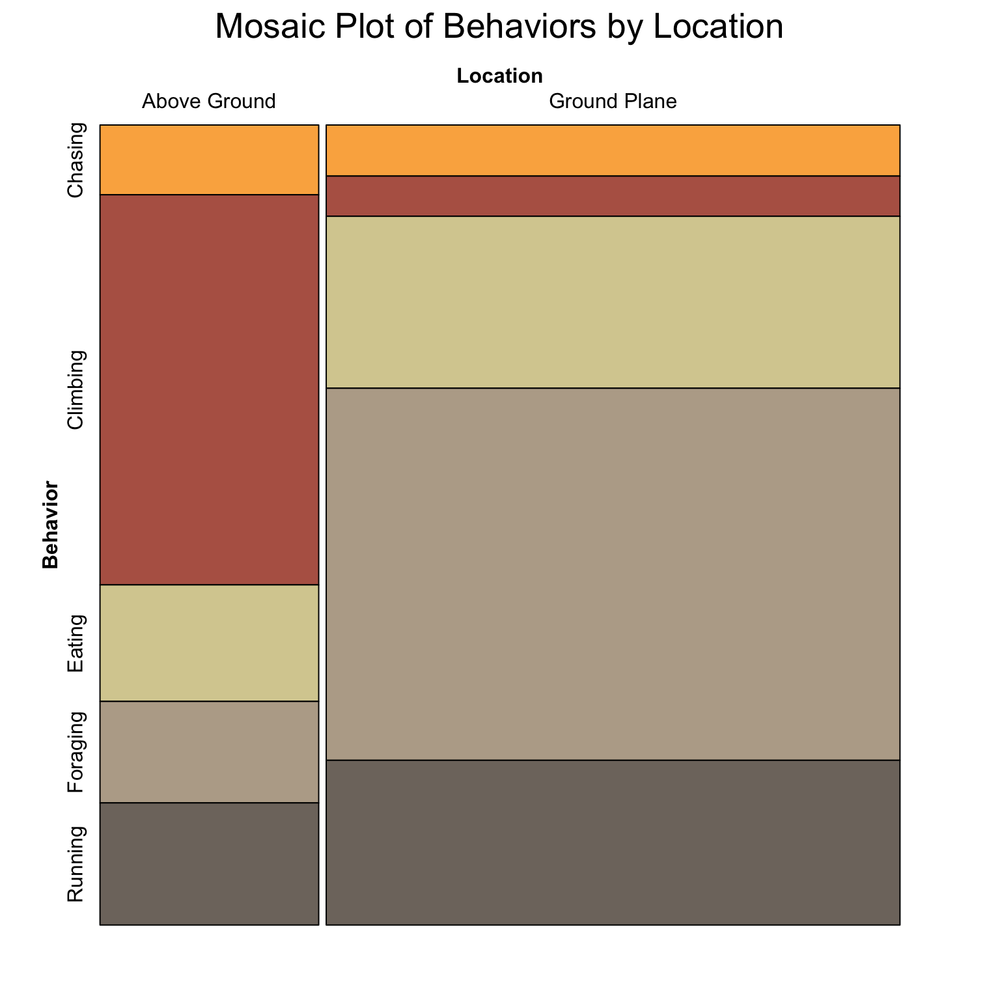
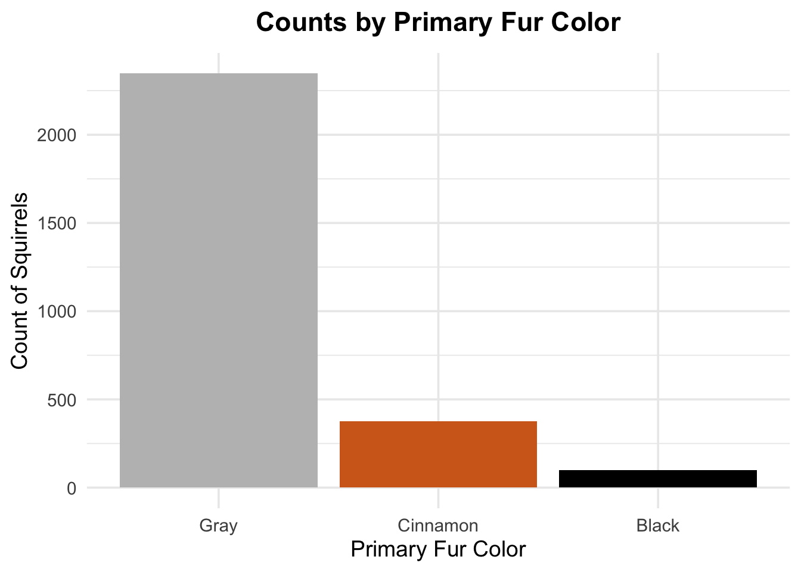
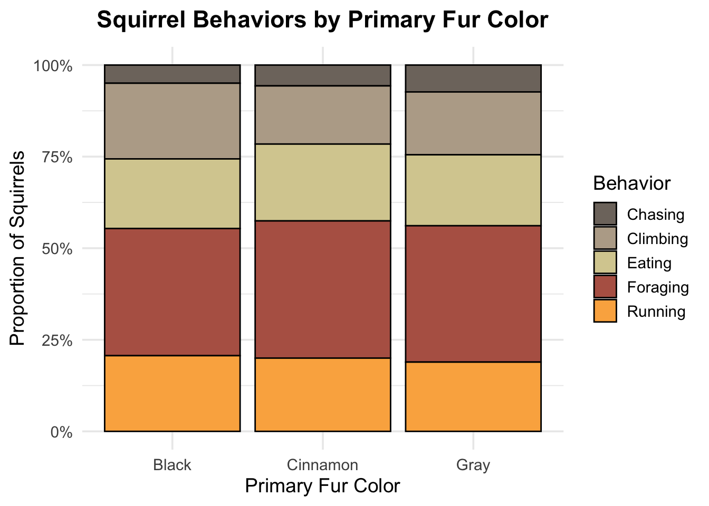

3.1 Exploration of squirrels of different Primary Fur Color
General Questions: How do black, cinnamon and standard gray morphs of Eastern Gray squirrels (Sciurus Carolinensis) differ in their spatial distributions and activity patterns in Central Park?
3.1.1 What is the total number of sightings of black, cinnamon, and gray morphs of Eastern Gray squirrels within Central Park?
Code
ggplot(squirrel_data, aes(x =fct_infreq(Primary.Fur.Color), fill = Primary.Fur.Color)) +geom_bar() +labs(title ="Counts by Primary Fur Color",x ="Primary Fur Color",y ="Count of Squirrels" ) +theme(legend.position ="none") +theme_minimal() +scale_fill_manual(values =c('black', '#D2691E', 'grey'), guide =FALSE)
The bar plot shows that Eastern Gray squirrels with gray fur are the most commonly sighted in Central Park, with over 2,000 observations. Cinnamon-colored squirrels are less common, with several hundred sightings, while black-colored squirrels are the rarest, with fewer than 500 sightings. This is reasonable since Eastern Gray squirrels are the most prevalent squirrels in the central park.
3.1.2 What is the spatial distribution of black, cinnamon, and gray morphs of Eastern Gray squirrels across Central Park?
Code
coord_sf_obj <- squirrel_data |>st_as_sf(coords =c('X', 'Y'), crs =4326) # crs=4326 refers to the "Coordinate Reference System" with EPSG code 4326. This ensures the coordinates are plot correctly.ggplot() +geom_sf(data = coord_sf_obj, aes(color = squirrel_data$Primary.Fur.Color), size =1.5, shape =1, alpha = .7) +scale_colour_manual(values =c('black', '#D2691E', 'grey')) +theme_minimal() +labs(title ='Squirrel Sighting Locations by Color', color ='Primary Fur Color')
The map shows that Gray squirrels seem to donimate the central park. They are widespread and seen almost everywhere on the map. Cinnamon-colored squirrels are less common and appear more scattered on the lower side of the park. Black squirrels are the rarest, with only a few sightings concentrated in specific areas. Such data might because of the ways of data collection that there might only be several black squirrels and the data are clustered becuase different people sighted it around it’s drey at different time.
3.1.3 How do sighted behaviors differ among black, cinnamon, and gray morphs of Eastern Gray squirrels in Central Park?
As the number of squirrels with different colors are largely imbalanced, we plot the stacked proportion bar plot to explore if sighted behaviors differ among black, cinnamon, and gray squirrels.
Code
# assuming squirrel_data has columns like Primary.Fur.Color, Running, Chasing, Climbing, Eating, Foraging proportion_data <- squirrel_data |>pivot_longer(cols =c(Running, Chasing, Climbing, Eating, Foraging), names_to ="Behavior",values_to ="Observed" ) |>filter(Observed =="true") |># Count number of squirrels per Behavior & Primary.Fur.Colorgroup_by(Primary.Fur.Color, Behavior) |>summarize(Count =n(), .groups ="drop")library(paletteer)ggplot(proportion_data, aes(x = Primary.Fur.Color, y = Count, fill = Behavior)) +geom_col(position ="fill", color ="black") +scale_y_continuous(labels = scales::percent_format()) +labs(title ="Proportion of Behaviors by Primary Fur Color",x ="Primary Fur Color",y ="Proportion of Squirrels",fill ="Behavior" ) +theme_minimal() +scale_fill_paletteer_d("ggthemes::Miller_Stone", direction =-1)

The plot shows that in Central Park appears uniform across fur colors, with foraging and running being the most frequent activities while squirrels are sighted.
3.2 What are the overall Eastern Gray squirrels’ spatiotemporal distributions and activity patterns in Central Park?
Since, we see no behavioral difference between across squirrels with different fur colors, we then explore the overall distribution of entire squirrel species.
3.2.1 What is the spatial concentration of Eastern Gray squirrel sightings within Central Park?
Code
# Extract coordinates from the point datasquirrel_coords <- squirrel_data |>mutate(coords =str_extract(Lat.Long, "\\(.*\\)"),coords =str_remove_all(coords, "[\\(\\)]"),longitude =as.numeric(word(coords, 1)),latitude =as.numeric(word(coords, 2)) )ggplot(squirrel_coords, aes(x = longitude, y = latitude)) +geom_hex(bins =40) +scale_fill_distiller(palette ="Blues", direction =1) +scale_x_continuous(labels =function(x) paste0(abs(x), "°W"), breaks =seq(-74, -73.95, by =0.01) ) +scale_y_continuous(labels =function(y) paste0(y, "°N"), breaks =seq(40.76, 40.8, by =0.005) ) +theme_minimal() +labs(title ="Squirrel Location Density",subtitle ="Hexagon binning visualization",x ="Longitude",y ="Latitude",fill ="Count" ) +coord_fixed()
From this plot, we can see that squirrels are spread throughout the central park, but they tend to cluster more heavily in certain areas. The darker-colored hexagons show spots where more sightings of squirrels are located, suggesting these places might be particularly attractive to them—maybe because of food sources, water, shelter, or other favorable conditions. To be specific, northern side of the Jacqueline Kennedy Onassis Reservoir, right next to the lake, and the lower right corner, are some of the “hotspot” for squirrels.
3.2.2 How does the frequency of Eastern Gray squirrel sightings vary across different times of day, different dates, and weather conditions in Central Park?
Code
# convert the Date column to proper date formatsquirrel_data <- squirrel_data |>mutate(Date =as.Date(Date, format ="%m%d%Y"),# make shift a factor with PM first so AM appears on topShift =factor(Shift, levels =c("PM", "AM")) )# ridgeline plotggplot(squirrel_data, aes(x = Date, y = Shift, fill = Shift)) +geom_density_ridges(alpha =0.6,scale =0.9,rel_min_height =0.01 ) +scale_fill_manual(values =c("AM"="#FDB462", "PM"="#80B1D3") ) +scale_x_date(# Show every date on x-axisdate_breaks ="1 day",date_labels ="%b %d",expand =c(0.01, 0) ) +labs(title ="Distribution of Squirrel Sightings",subtitle ="By Time of Day",x ="Date",y ="Shift" ) +theme_ridges() +theme(legend.position ="none",axis.text.x =element_text(angle =45, hjust =1),panel.grid.major =element_blank(),panel.grid.minor =element_blank() )
Picking joint bandwidth of 0.896
This plot shows the distribution of squirrel sightings across days in October, divided into morning (AM) and afternoon (PM) shifts. The overall sighting density are similar for morning and afternoon across October, except several days like Oct 07, 10, 13, and 14. This could becuase different weather condition across the day. For example,
3.2.3 How are Eastern Gray squirrel’s activity patterns affected by age and environmental features?
Code
library(scales)
Attaching package: 'scales'
The following object is masked from 'package:viridis':
viridis_pal
The following object is masked from 'package:purrr':
discard
The following object is masked from 'package:readr':
col_factor
Code
behavior <- squirrel_data |>select(Age, Running, Chasing, Climbing, Eating, Foraging, Shift) |>pivot_longer(cols =c(Running, Chasing, Climbing, Eating, Foraging),names_to ="Behavior",values_to ="Observed" ) |>filter(Observed =="true") |># Summarize counts per Age, Behavior, and Shiftgroup_by(Age, Behavior, Shift) |>summarize(Count =n(), .groups ="drop") |># Now group by Age and Shift to get the total count for that subsetgroup_by(Age, Shift) |>mutate(Proportion = Count /sum(Count)) |>ungroup()ggplot(behavior, aes(x = Behavior, y = Proportion, fill = Age)) +geom_bar(stat ="identity", position ="dodge") +labs(title ="Comparison of Behaviors by Age and Shift (Proportion)",x ="Behavior",y ="Proportion of Squirrels",fill ="Age Group" ) +facet_wrap(~Shift) +theme_minimal() +scale_y_continuous(labels =label_percent())+scale_fill_manual(values =c("Adult"="#502419", "Juvenile"="#7ea172") )

Code
foraging_alluvial_data <- squirrel_data |>filter(Foraging =="true") |>group_by(Shift, Location) |>summarize(Count =n(), .groups ="drop") |>mutate(Shift =factor(Shift),Location =factor(Location) )ggplot(foraging_alluvial_data,aes(axis1 = Shift, axis2 = Location, y = Count, fill = Location)) +geom_alluvium(color ="black") +geom_stratum() +geom_text(stat ="stratum", aes(label =after_stat(stratum)), size =2) +scale_x_discrete(expand =c(0.1, 0.1)) +labs(title ="Foraging Patterns Across Shift and Location",x ="", y ="Count" ) +theme_minimal()
Code
behavior_location <- squirrel_data |>select(Running, Chasing, Climbing, Eating, Foraging, Location) |>pivot_longer(cols =c(Running, Chasing, Climbing, Eating, Foraging),names_to ="Behavior",values_to ="Observed" ) |>filter(Observed =="true") |>group_by(Behavior, Location) |>summarize(Count =n(), .groups ="drop") mosaic_table <-xtabs(Count ~ Location + Behavior, data = behavior_location)colors <-paletteer_d("ggthemes::Miller_Stone")highlighting_colors <-tail(colors, 5)# Apply the colors to the mosaic plotvcd::mosaic(~ Behavior + Location,data = mosaic_table,direction =c("h", "v"),highlighting ="Behavior",highlighting_fill = highlighting_colors, # Using the last five colorsshade =TRUE,legend =FALSE,main ="Mosaic of Behaviors by Location")

3.2.4 How do Eastern Gray squirrels interact with humans when being sighted?